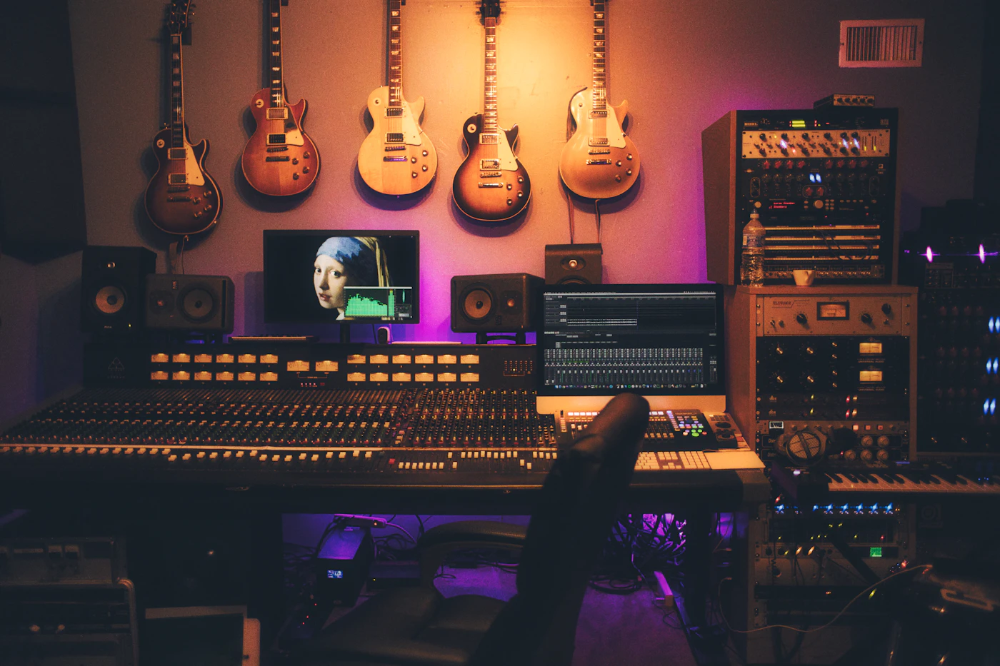

Música independiente / Cultura sonora
MAKE
ROOM.
Un lugar para lo que merece escucharse.
Sin frecuencia fija. Sin pedir permiso.
SONIDO CON IDENTIDADESCUCHA SIN PRISAFUERA DEL ALGORITMO
Listening room / Sesión de muestraUna señal.
Una señal.
Todo un
universo.
Abre espacio para escuchar. Una pieza instrumental incluida en esta experiencia, con reproducción real y controles a tu ritmo.
Audio de demostración del portfolio. No se presenta como un lanzamiento comercial.

ESTUDIOSEÑAL
Estudio Señal
PIEZA INSTRUMENTAL / ARCHIVO LOCALElige reproducir para comenzar.
Al margen
del ruido.
NOTAS EDITORIALES
SOBRE MÚSICA Y DISEÑO.
Menos contenido.
Más escucha.
ECHO ROOM es una exploración de identidad para un espacio musical independiente. Fotografía en blanco y negro, naranja de señal y una tipografía que ocupa su lugar. La música se activa cuando tú decides.
Volver a escuchar